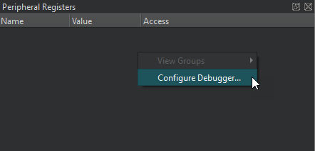

Peripheral Registers
The Peripheral Registers view displays the current state of peripheral devices, such as a mouse, keyboard, display, printer, or USB drive. Applications write registers to send information to the device and read them to get information from the device. To read registers in a peripheral device, the application accesses its I/O addresses with a load or store instruction that the CPU issues.

The Access column shows whether the register is read-and-write (RW), read-only (RO), or write-only (WO). N/A means that the access type is not available.
Right-click column headers to show and hide columns in the view.
Right-click the view to select the following actions:
- View register groups.
- Set debugger preferences.
By default, the Peripheral Registers view is hidden. To show it, select it in Views on the debugger toolbar.